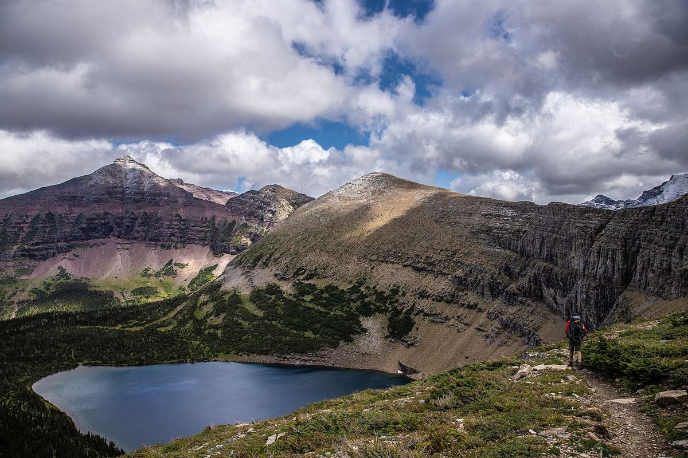

Glacier National Park
Up to Pitamakan Lake
Some lakes you drive to. This one you earn, one switchback at a time, until the trail tips over a shoulder of the ridge and the water shows up below you like a dropped piece of sky.
We started from the valley floor before sunrise, when the air still smelled of wet pine and the only sound was the creek. The first miles are gentle: a wide path through spruce and fir, a couple of footbridges, and the occasional clearing where you can see the ridge you're about to climb.
Then the trail gets serious. It leaves the trees in a series of long, steady switchbacks, and the views open up with every turn. By mid-morning we were above the last stunted trees, walking through low grass and late wildflowers, with the red flank of the mountain glowing ahead of us.
The last climb
The final stretch to the pass is short but windy. Bring a layer even on a warm day; the wind up here doesn't care what the forecast said in town. From the top, the lake sits in a bowl below, rimmed with green, and the trail drops down to its shore in a few easy loops.
We ate lunch on a flat rock by the water and watched the light change on the peak. A marmot supervised from a boulder nearby. Nobody else came by for almost an hour.
What we packed
- Three liters of water each, plus a filter for refills at the lake
- A warm layer and a rain shell for the pass
- Bear spray, carried where you can reach it
- Sun hat, sunscreen and sunglasses: there's little shade above the trees
- A paper map, because phones run out of battery at the worst moment
Plan for a long day. Start early, check trail conditions with the park before you go, and turn around if the weather turns. The lake will still be there next time.
Getting back
We went back the way we came, which meant the best views were in front of us the whole way down. If you have the legs and the daylight, a longer loop continues over the next pass, but that's a story for another trip.